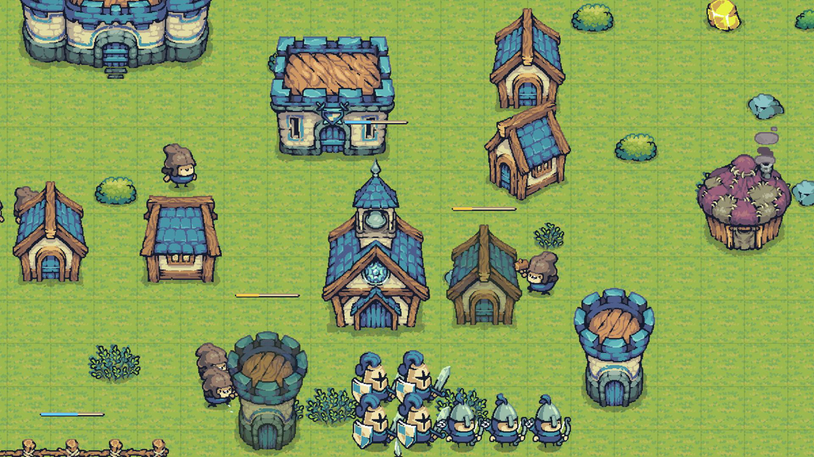
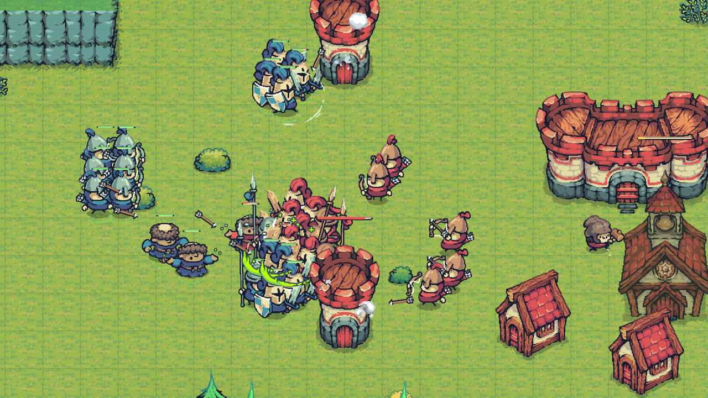
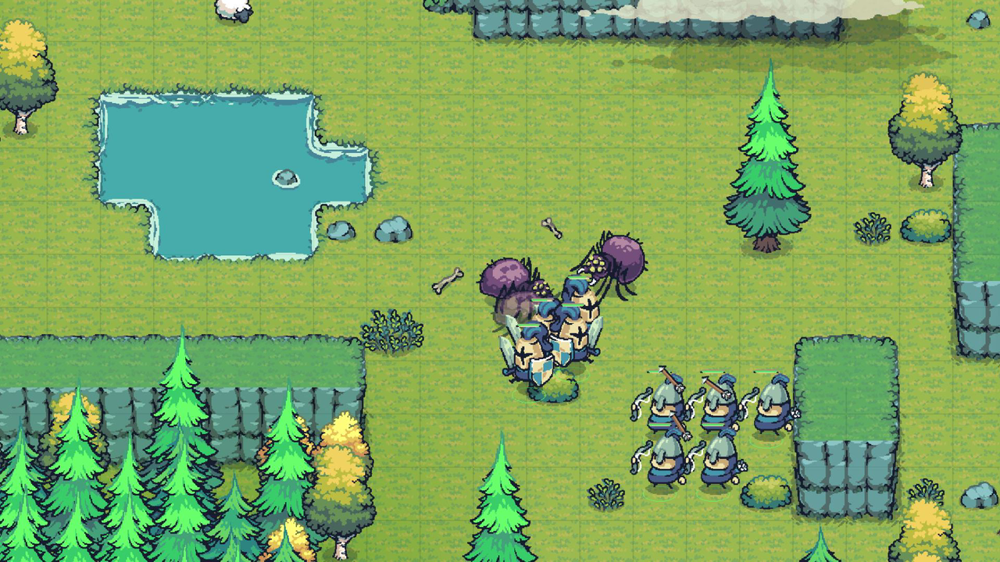
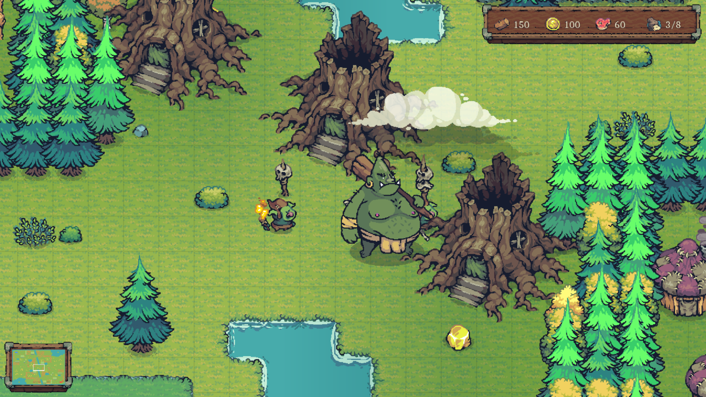
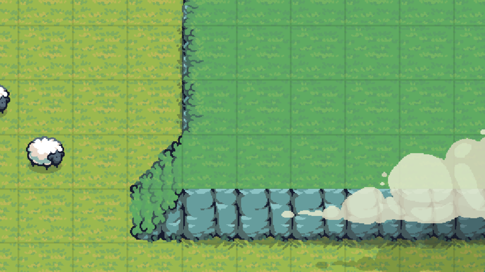
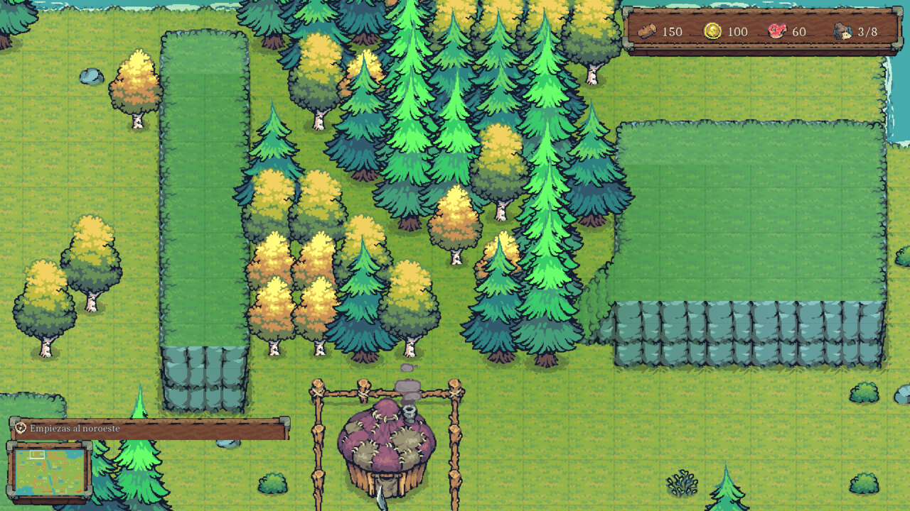
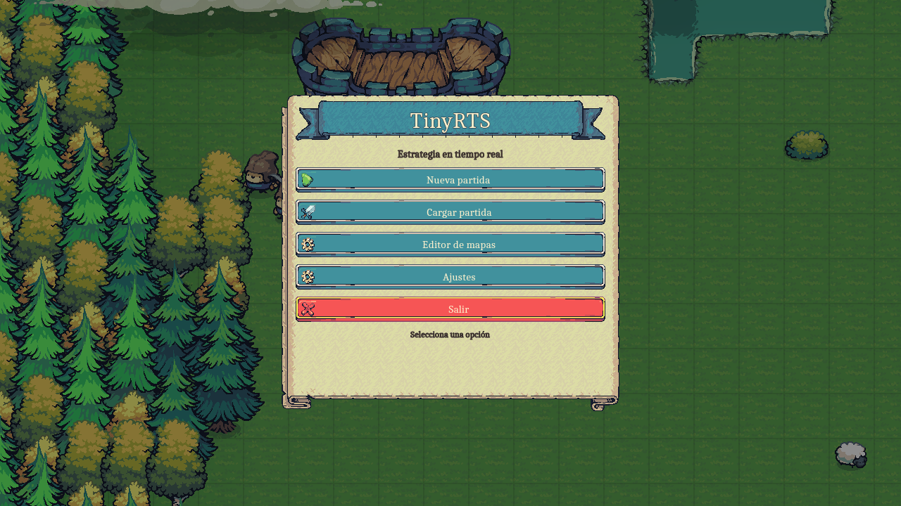
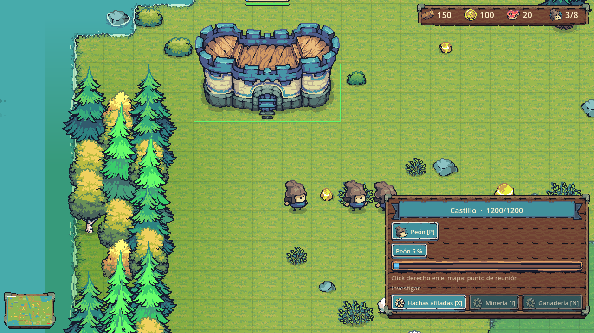
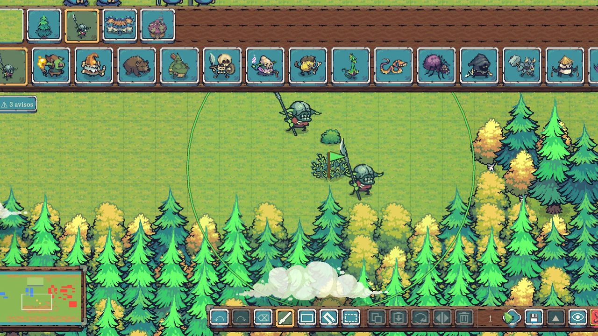
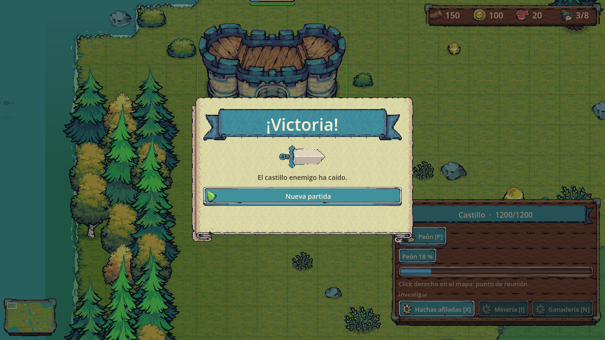

What you do in a game
You start with a Castle, three Pawns and a handful of resources. Pawns cut trees, mine gold and carry every load back to the Castle by hand. Trees leave stumps and gold veins run dry, so sooner or later you build a second Castle on the next patch of resources. Sheep pens feed you passively; Houses raise the population cap; the Barracks, Archery and Monastery train Warriors, Archers, Lancers and Monks; nine technologies in three branches make everything sharper.
The map is shared with neutral camps: goblins, trolls, spider nests, thief hideouts, pirate coves in the water. Each one has guardians, a fixed post they defend, regeneration if you leave them alone, and a reward when you clear them. Neutral markets, mercenaries and taverns sit in the middle of the map for whoever gets there first. The last player with a Castle standing wins.
Features
- Real-time simulation at a fixed 20 Hz step, rendered at 60 fps with interpolation between ticks.
- Free movement in pixels. A* on the 64 px grid without corner cutting, path smoothing and local separation via a spatial hash. Units never block cells; buildings, resources and terrain do. 200 units cross the map at 60 fps.
- An economy of trips. Finite trees and gold veins, Pawns that gather, load up and deliver, passive food from sheep pens, expansion with a second Castle. Neutral market, mercenaries and tavern.
- Elevation that matters. Plateaus and cliffs joined only by one-tile side stairs. Ranged units and towers gain range and vision from above; melee never crosses an edge.
- 21 kinds of neutral camp with 24 creatures from the Enemy Pack, including static water guardians like the harpoon shark and the bomb fish. The four-player map has 33 camps.
- AI opponents for two to four players that expand, trade at the market, build towers on the way to the enemy and pick wave targets by path length or weakness. Tuned by playing hundreds of simulated games, because the simulation has no randomness and a single game is a chaotic sample rather than a measure.
- Fog of war with three states, a minimap with alerts, and Warcraft 3 controls: box select, contextual right click, attack-move, stop and hold, control groups, edge and WASD scrolling. Every key can be rebound.
- Map editor in the Mario Maker spirit. Paint terrain, resources, camps and start positions over the real world, press P to play the map in under a tenth of a second, Esc to keep editing. Brush, rectangle, fill and selection tools, copy and paste, rotate and mirror, and a validator that warns about unreachable bases, guarded resources or missing building room.
- Three official maps. The Valley (96×64, two players), the Crossroads (160×160, four players, rotational symmetry) and Four Winds, made with the editor. The first two come from Python generators that validate symmetry, connectivity, choke widths and travel distances between bases.
- Save slots with autosave, Spanish and English, 59 sound effects, music and ambience.
The maps, drawn from their data
These are the three official maps as the game stores them: one character per tile for the terrain, plus lists of trees, gold veins, camps, neutral buildings and start positions. Hover to see what is where.
- Water
- Grass
- Plateau
- Cliff
- Stairs
- Tree
- Gold vein
- Camp
- Water camp
- Market, mercenaries or tavern
- Start position
Screenshots
{kind=link}

{kind=link}

{kind=link}

{kind=link}

{kind=link}

{kind=link}

{kind=link}

{kind=link}

{kind=link}

{kind=link}

How it is built
The game is two halves that never mix. The simulation is plain C# with no Godot nodes and no frame delta, advanced at a fixed rate, tested with xUnit without opening the engine and serialized to JSON for saving. The Godot layer draws that state and hosts an interface that never touches an entity: it only enqueues commands, and so does the AI.
That split is what makes the rest possible. The test suite plays whole games: ten minutes of AI against AI on the Valley and fifteen minutes with four AIs on the Crossroads run headless in about thirty seconds, and they assert things like "nobody is eliminated before minute ten" and "no AI sits idle for a minute". A command-line harness drives the real engine with synthetic input and scripted orders, takes screenshots and measures frame time, so a change can be verified without a mouse.
| Engine | Godot 4.6.2 .NET, C# 12 on .NET 8, no other dependencies |
|---|---|
| Renderer | Compatibility (OpenGL 3.3), nearest filtering, pixel snapping |
| Code | About 0 lines of C# in 0 files, plus 0 lines of tests |
| Tests | 0, including full simulated games |
| Performance | 4 AIs and 0 units at 60 fps with a 1.3 ms simulation tick |
| Content | 0 unit types, 7 buildings, 9 technologies, 0 camp kinds, 3 maps |
| Text | 0 localized strings in Spanish and English |
Terrain and static layers are retained draw commands, not nodes; sprites exist only for what animates; selection rings, foam and shadows are single nodes that redraw when something changes. The whole scene stays around a dozen draw calls with hundreds of units on screen.
The project was built with Claude Code doing the programming and me leading the design, playing every build and deciding what goes in and what gets cut. The source repository is private; this site and its repository are the public presentation.
Status
Playable from start to finish: economy, building, training, combat, technology, AI for two and four players, neutral camps, saving, audio, editor, two languages. Development started on 8 September 2026. The roadmap points at a Steam release, which is why game statistics already live in the simulation and saves are one file per slot.
Credits
- Art: Tiny Swords and its Enemy Pack by Pixel Frog, used under their license. The packs are not redistributed here.
- Font: Caladea by Huerta Tipográfica, SIL Open Font License.
- Sounds: Pixabay.
- Engine: Godot Engine.